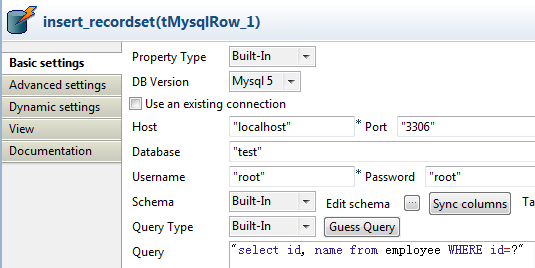
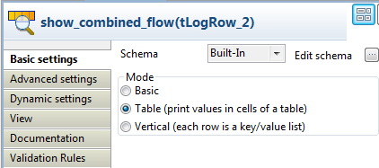

Famille de composant | Databases/MySQL | |
Fonction | Le tMysqlRow est le composant spécifique à ce type de base de données. Il exécute des requêtes SQL déclarées sur la base de données spécifiée. Le suffixe Row signifie que le composant met en place un flux dans le Job bien que ce composant ne produise pas de données en sortie. | |
Objectif | Selon la nature de la requête et de la base de données, tMysqlRow agit sur la structure même de la base de données ou sur les données (mais sans les manipuler). Le SQLBuilder peut vous aider à rapidement et aisément écrire vos requêtes. | |
Basic settings | Property type | Peut être Built-in ou Repository. |
|
| Built-in : Propriétés utilisées ponctuellement. |
|
|
|
Repository : Sélectionnez le fichier de propriétés du composant. Les champs suivants sont alors pré-remplis à l’aide des données collectées. |
| DB Version | Sélectionnez la version de MySQL que vous utilisez. |
| Use an existing connection | Cochez cette case et sélectionnez le composant de connexion adéquat à partir de la liste Component list pour réutiliser les paramètres d’une connexion que vous avez déjà définie. NoteLorsqu’un Job contient un Job parent et un Job enfant, si vous souhaitez utiliser une connexion existant entre les deux niveaux, par exemple pour partager la connexion créée par le Job parent avec le Job enfant, vous devez :
Pour plus d’informations concernant le partage d’une connexion à travers différents niveaux de Jobs, consultez le Guide utilisateur de Talend Open Studio. |
| Host | Adresse IP du serveur de base de données. |
| Port | Numéro du port d’écoute du serveur de base de données. |
| Database | Nom de la base de données. |
| Username et Password | Informations d’authentification de l’utilisateur de base de données. |
| Schema et Edit Schema |
Un schéma est une description de lignes, il définit le nombre de champs qui sont traités et passés au composant suivant. Le schéma peut être Built-in ou distant dans le Repository. |
|
| Built-in : Le schéma est créé et conservé ponctuellement pour ce composant seulement. Voir également le Guide utilisateur de Talend Open Studio. |
|
|
|
Repository : Le schéma existe déjà et est stocké dans le Repository. Ainsi, il peut être réutilisé. Voir également le Guide utilisateur de Talend Open Studio. |
| Table Name | Nom de la table à traiter. |
| Query type |
La requête peut être Built-in ou distante dans le Repository. |
|
| Built-in : Saisissez manuellement votre requête ou construisez-la à l’aide de SQLBuilder. |
|
|
|
Repository : Sélectionnez la requête appropriée dans le Repository. Le champ Query est renseigné automatiquement. |
| Guess Query | Cliquez sur le bouton Guess Query pour générer la requête correspondant au schéma de votre table dans le champ Query. |
| Query | Saisissez votre requête en faisant particulièrement attention à l’ordre des champs afin qu’ils correspondent à la définition du schéma. |
| Die on error | Cette case est cochée par défaut et stoppe le Job en cas d’erreur. Décochez cette case pour terminer le traitement avec les lignes sans erreur, et ignorer les lignes en erreur. Vous pouvez récupérer les lignes en erreur, si vous le souhaitez. Pour cela, utilisez un lien Row > Rejects. |
| Specify a data source alias |
Cochez cette case et spécifiez l'alias de la source de données créée dans Talend Runtime pour utiliser le pool de connexions partagées défini dans la configuration des données source. Cette option fonctionne lorsque vous déployez et exécutez votre Job dans Talend Runtime. AvertissementSi vous utilisez la configuration de la base de données du composant, la connexion à votre source de données se ferme à la fin du composant. Pour empêcher la fermeture de la connexion, utilisez une connexion partagée à la base de données, avec l'alias de la source de données spécifié. Cette option est indisponible lorsque la case Use an existing connection est cochée. | |
Advanced settings | Additional JDBC parameters | Spécifiez des informations supplémentaires de connexion à la base de données créée. Cette option est disponible lorsque la case Use an existing connection est décochée dans les Basic settings. |
| Propagate QUERY’s recordset | Cochez cette case pour insérer les résultats de la requête dans une colonne du flux en cours. Sélectionnez cette colonne dans la liste use column. NoteCette option permet au composant d'avoir un schéma différent de celui du composant précédent. De plus, la colonne contenant le résultat de la requête doit être de type Object. Ce composant est généralement suivi du tParseRecordSet. |
| Use PreparedStatement | Cochez cette case pour utiliser une instance PreparedStatement afin de requêter votre base de données. Dans le tableau Set PreparedStatement Parameter, définissez les valeurs des paramètres représentés par des “?” dans l’instruction SQL définie dans le champ Query de l’onglet Basic settings. Parameter Index : Saisissez la position du paramètre dans l’instruction SQL. Parameter Type : Saisissez le type du paramètre. Parameter Value : Saisissez la valeur du paramètre. Cette option est très utile si vous devez effectuer de nombreuses fois la même requête. Elle permet un gain de performance. |
| Commit every | Nombre de lignes à inclure dans le lot avant de commencer l’écriture dans la base. Cette option garantit la qualité de la transaction (cependant pas de rollback) et surtout une meilleure performance d’exécution. |
| tStatCatcher Statistics | Cochez cette case pour collecter les données de log au niveau du composant. |
|
Dynamic settings |
Cliquez sur le bouton [+] pour ajouter une ligne à la table. Dans le champ Code, saisissez une variable de contexte afin de sélectionner dynamiquement votre connexion à la base de données parmi celles prévues dans votre Job. Cette fonctionnalité est utile si vous devez accéder à plusieurs tables de bases de données ayant la même structure mais se trouvant dans différentes bases de données, en particulier lorsque vous travaillez dans un environnement dans lequel vous ne pouvez pas changer les paramètres de votre Job, par exemple lorsque votre Job doit être déployé et exécuté dans un Studio Talend indépendant. La table Dynamic settings n'est disponible que si la case Use an existing connection est cochée dans la vue Basic settings. Lorsqu'un paramètre dynamique est configuré, la liste Component List devient inaccessible dans la vue Basic settings. Pour plus d'informations concernant les Dynamic settings et les variables de contexte, consultez le Guide utilisateur Talend Open Studio. | |
Utilisation | Ce composant offre la flexibilité des requêtes sur les bases de données et couvre toutes les possibilités de requêtes SQL. | |
Le scénario suivant crée un Job à quatre composants permettant de supprimer un index de table, effectuer un Insert dans cette table avant de re-générer l’index.
Sélectionnez les composants suivants dans la Palette et déposez-le dans l’espace de modélisation : deux tMysqlRow, un tRowGeneratoret un tMysqlOutput.
Connectez le premier composant tMysqlRow au tRowGenerator à l'aide d'un lien OnComponentOk.
Reliez le tRowGenerator au tMysqlOutput à l'aide d'un lien Row > Main.
Connectez le composant tRowGenerator au second composant tMysqlRow à l’aide d’une connexion OnSubjobOk.

Sélectionnez le composant tMysqlRow et renseignez les propriétés de la base de données dans l’onglet Basic settings.
Dans les champs Property type et Schema, sélectionnez la base de données appropriée dans la liste.
Les détails de connexion à la base de données ainsi que le schéma de la table sont renseignés automatiquement.
Propagez les informations de propriétés et de schéma aux autres composants du Job.
La requête étant conservée dans les Metadata du Repository, vous pouvez également sélectionner Repository dans le champ Query type et cliquer sur la requête correspondante.
Si vous ne conservez pas vos requêtes dans le Repository, saisissez la déclaration SQL suivante : drop index <index_name> on <table_name>
Sélectionnez le deuxième composant tMysqlRow, vérifiez ses propriétés et son schéma.
Puis saisissez la déclaration SQL permettant de recréer un index à l’aide de la formulation suivante : create index <index_name> on <table_name> (<column_name>);
Le composant tRowGenerator permet de générer automatiquement les colonnes à ajouter à la table de sortie définie.
Sélectionnez le composant tMysqlOutput et renseignez les propriétés de connexion à la base de données soit à partir du Repository ou manuellement si les informations de connexion ne sont utilisées que pour ce Job. La table à alimenter a pour nom : comprehensive.
Le schéma est automatiquement hérité du flux de données du tLogRow. Editez le schéma et vérifiez que sa structure correspond au schéma attendu par la table de base de données spécifiée.
Dans le champ Action on table, sélectionnez None et dans le champ Action on data, sélectionnez Insert.
Aucune colonne supplémentaire n’est requise pour ce Job.
Appuyez sur les touches Ctrl+S pour sauvegardez le Job.
Appuyez sur F6 pour exécuter ce Job.
Si vous avez la possibilité d’observer l’action sur la base de données, remarquez que l’index a été supprimé en début de Job puis recréé à la fin de l’action d’Insert.
Voir également la section intitulée « tDBSQLRow ».
Le scénario suivant décrit un Job à quatre composants permettant de lier la colonne d’une table à un fichier clients. En effet, la table MySQL contient la liste de tous les Etats américains avec leur identifiant, et le fichier contient des informations sur vos clients avec l’identifiant de l’état dans lequel ils résident. L’objectif de ce scénario est de récupérer le nom de l’Etat pour chaque client à l’aide d’une requête SQL. Afin de traiter un grand nombre de données plus rapidement, utilisez l'objet PreparedStatement permettant de n’exécuter qu’une seule fois la requête au lieu de l’effectuer à chaque ligne. Chaque ligne de données est envoyée comme paramètre. Un objet PreparedStatement peut également être utilisé pour éviter une injection SQL.
Pour ce scénario, utilisez un fichier et une base de données dont vous avez préalablement stocké la connexion et les propriétés dans des métadonnées dans le Repository.Pour plus d’informations concernant la création de métadonnées de fichiers délimités, la création de métadonnées de connexion à une base de données et l’utilisation de ces métadonnées, consultez le Guide utilisateur de Talend Open Studio.

A partir du Repository, développez le nœud Metadata et File delimited
Sélectionnez la métadonnée correspondant au fichier clients que vous souhaitez utiliser dans ce Job. Ici, vous utilisez la métadonnée customers.
Glissez cette métadonnée dans l’espace de modélisation et double-cliquez sur tFileInputDelimited dans la boîte de dialogue Components afin de créer un composant tFileInputDelimited déjà paramétré.

Dans la liste Schema, sélectionnez Built-in afin de modifier le schéma de votre composant. Puis, cliquez sur le bouton [...] à côté du champ Edit schema pour ajouter la colonne dans laquelle insérer le nom de l’Etat.

Cliquez sur le bouton [+] pour ajouter une colonne au schéma. Renommez cette colonne LabelStateRecordSet, et elle est de type objet, donc sélectionnez Object dans la liste Type. Cliquez sur OK pour enregistrer vos modifications.
A partir de la Palette, sélectionnez les composants tMysqlRow, tParseRecordSet et tFileOutputDelimited et glissez-les dans l’espace de modélisation.
Reliez les quatre composants via des liens de type Row > Main.
Double-cliquez sur le composant tMysqlRow pour paramétrer ses propriétés dans l’onglet Basic settings de la vue Component.

Dans la liste Property Type, sélectionnez Repository et cliquez sur le bouton [...] pour sélectionner la connexion à la base de données centralisée dans les métadonnées du Repository. Les champs DB Version, Host, Port, Database, Username et Password sont renseignés automatiquement. Si vous êtes en mode Built-in, renseignez ces champs manuellement.
Dans la liste Schema, sélectionnez Built-in pour paramétrer le schéma manuellement et ajouter la colonne LabelStateRecordSet, ou cliquez directement sur le bouton Sync columns pour récupérer le schéma du composant précédent.
Dans le champ Query, saisissez la requête SQL à utiliser. Ici, vous souhaitez récupérer les noms des Etats américains contenus dans la colonne LabelState de la table MySQL us_state :
"SELECT LabelState FROM us_state WHERE idState=?". Le point d’interrogation “?” représente le paramètre à définir dans l’onglet Advanced settings.Cliquez sur l’onglet Advanced settings pour paramétrer les propriétés avancées du composant.

Cochez la case Propagate QUERY’s recordset et sélectionnez la colonne LabelStateRecordSet dans la liste use column pour insérer le résultat de la requête dans cette colonne.
Cochez la case Use PreparedStatement et définissez le paramètre utilisé dans la requête dans le tableau Set PreparedStatement Parameters.
Cliquez sur le bouton [+] pour ajouter un paramètre.
Dans la cellule Parameter Index, saisissez la position du paramètre dans l’instruction SQL. Saisissez “1” étant donné que vous n’utilisez qu’un seul paramètre dans l’exemple.
Dans la cellule Parameter Type, saisissez le type du paramètre. Ici, le paramètre est de type entier, donc sélectionnez Int dans la liste.
Dans la cellule Parameter Value, saisissez la valeur du paramètre. Ici, vous souhaitez récupérer le nom de l’Etat en fonction de leur ID pour chaque client du fichier d’entrée, saisissez donc “
row1.idState”.Double-cliquez sur le composant tParseRecordSet pour paramétrer ses propriétés dans l’onglet Basic settings de la vue Component.

Dans la liste Prev. Comp. Column list, sélectionnez la colonne du composant précédent à analyser. Dans cet exemple, sélectionnez la colonne LabelStateRecordSet.
Cliquez sur le bouton Sync columns pour récupérer le schéma du composant précédent et le tableau Attribute table est automatiquement renseigné avec les colonnes du schéma.
Dans le tableau Attribute table, dans le champ Value correspondant à la colonne LabelStateRecordSet, saisissez entre guillemets le nom de la colonne contenant le nom des Etats à récupérer et à mettre en correspondance avec chaque client. Dans cet exemple, saisissez “LabelState”.
Double-cliquez sur le composant tFileOutputDelimited pour paramétrer ses propriétés dans l’onglet Basic settings de la vue Component.

Dans le champ File Name, renseignez le chemin d’accès et le nom du fichier de sortie.
Cliquez sur le bouton Sync columns pour récupérer le schéma du composant précédent.
Enregistrez votre Job et appuyez sur F6 pour l’exécuter.

Une colonne contenant le nom de l’Etat américain correspondant à chaque client a été ajoutée au fichier.
Dans ce scénario, un flux généré par un tFixedFlowInput est combiné avec un flux de la base de données MySQL. Le flux source contient les champs id et age alors que la table MySQL contient id et name. Vous allez récupérer les données age du flux source et les combiner avec les enregistrements id et name de la table MySQL à partir de la mise en correspondance avec id. Le schéma d'entrée est différent de celui de sortie, dans le tMysqlRow.
Déposez un tFixedFlowInput, un tMysqlRow, un tParseRecordSet et un tLogRow de la Palette dans l'espace de modélisation graphique.
Renommez le tFixedFlowInput en source_flow, le tMysqlRow en insert_recordset, le tParseRecordSet en parse_recordset et le tLogRow en show_combined_flow.
Reliez le tFixedFlowInput au tMysqlRow à l'aide d'un lien Row > Main.
Reliez le tMysqlRow au tParseRecordSet à l'aide d'un lien Row > Main.
Connectez le tParseRecordSet au tLogRow à l'aide d'un lien Row > Main.

Double-cliquez sur le tFixedFlowInput pour ouvrir sa vue Basic settings.

Sélectionnez l'option Use Inline Content (delimited file) dans la zone Mode.
Dans le champ Content, saisissez les données à transférer :
1;30 2;20
Double-cliquez sur le bouton [...] à côté du champ Edit schema pour ouvrir l'éditeur du schéma.

Cliquez sur le bouton [+] pour ajouter deux colonnes, nommées id et age, de type Integer.
Cliquez sur OK pour fermer l'éditeur.
Double-cliquez sur le tMysqlRow pour ouvrir sa vue Basic settings.
Dans les champs Host et Port, saisissez les informations de connexion.
Dans le champ Database, saisissez le nom de la base de données.
Dans les champs Username et Password, saisissez les informations d'authentification.
Dans le champ Query, saisissez la requête SQL permettant de récupérer les données de id et name dans la table MySQL employee :
"select id, name from employee WHERE id=?".Le point d'interrogation, “
?” représente le paramètre à configurer l'onglet Advanced settings.Cliquez sur le bouton [...] à côté du champ Edit schema pour ouvrir l'éditeur du schéma.

Cliquez sur le bouton [+] pour ajouter deux colonnes, à droite, nommées recordset et age, de type Object et Integer. Notez que recordset doit contenir les résultats de la requête de la table MySQL, c'est-à-dire les champs id et name.
Cliquez sur OK pour fermer l'éditeur.
Cliquez sur l'onglet Advanced settings afin de configurer les paramètres avancés.

Cochez la case Propagate QUERY's recordset et sélectionnez recordset dans la liste use column afin d'insérer les résultats de la requête dans cette colonne.
Cochez la case Use PreparedStatement et définissez les paramètres utilisés dans la requête, dans la table Set PreparedStatement Parameters.
Cliquez sur le bouton [+] pour ajouter une ligne.
Dans la cellule Parameter Index, saisissez la position du paramètre dans l'instruction SQL. Saisissez “1” puisque vous utilisez un paramètre dans cet exemple.
Dans la cellule Parameter Type, saisissez le type de paramètre. Le paramètre est de type Integer. Sélectionnez Int dans la liste.
Dans la cellule Parameter Value, saisissez la valeur du paramètre. Ici, vous allez récupérer les colonnes id et name de la table employee selon la valeur de id du flux source. Saisissez row3.id.
Double-cliquez sur le composant tParseRecordSet pour ouvrir sa vue Basic settings.

Dans la liste Prev. Comp. Column list, sélectionnez la colonne à analyser, recordset.
Cliquez sur le bouton [...] à côté du champ Edit schema pour ouvrir l'éditeur du schéma.

Cliquez trois fois sur le bouton [+] pour ajouter trois colonnes, à droite, nommées id, name et age, respectivement de type Integer, String et Integer. Les colonnes id et name doivent contenir les données analysées de recordset.
Cliquez sur OK pour fermer l'éditeur.
Dans la table Attribute table, dans les champs Value correspondants aux colonnes id et name, saisissez le nom des colonnes de la table MySQL à récupérer, "id" et "name".
Double-cliquez sur le tLogRow pour ouvrir sa vue Basic settings.
Dans la zone Mode, sélectionnez Table (print values in cells of a table) pour un affichage sous forme de tableau.